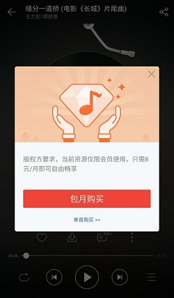
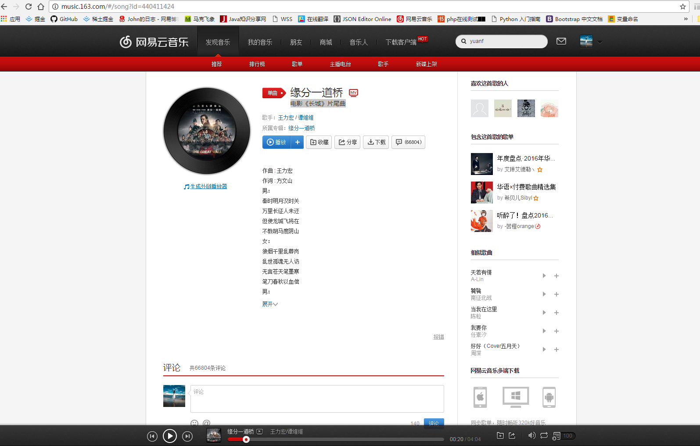
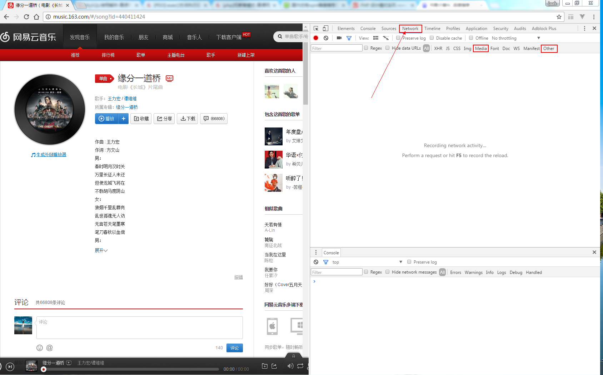
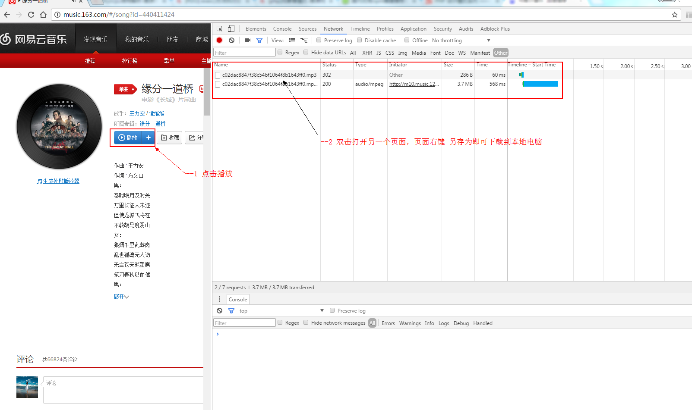
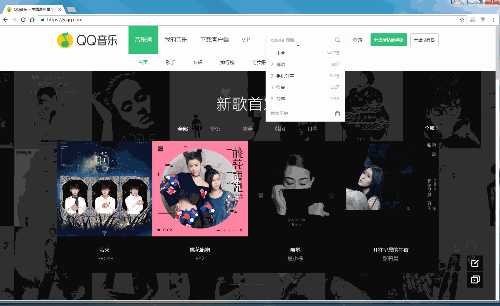

你是不是听到好听的歌曲总想点击下载，可时当你点击下载时却不能下载。这里提供一个解决方案，基本上网易云音乐啊，QQ音乐什么的 ，其他的酷狗，酷我音乐也类似 . 这里介绍一下网易云音乐和QQ音乐中一些歌曲点击下载时却不能下载小技巧。这里推荐使用Chrome浏览器吧，其他的也可以，不要告诉我你还在用IE 。—— 关爱前端程序员,请使用现代浏览器。
比如这首歌 缘分一道桥（电影《长城》片尾曲） 在手机app网易云音乐上不能下载。

Next 来到浏览器 打开网易云音乐 http://music.163.com/
找到这首你可以听却不能在手机上下载的这首歌的页面如下：

接下来，快捷键F12 打开 开发者控制台，点击下图中的Network，此时刷新页面(F5快捷键)

接下来点击上图中的Media 或者 Other 你想要的东西就在这里啦，点击播放按钮,你想要的就来了。看到mp3的后缀了么，双击打开页面右键另存为即可下载到电脑，修改名字即可 如果Media中没有 就在Other里了。看下图

具体的演示操作见下gif(网易云音乐)

QQ音乐 操作演示见下gif
